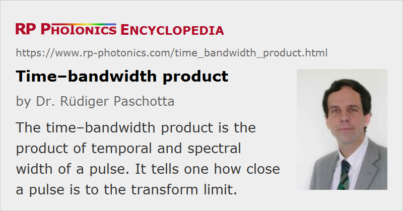

Time–bandwidth Product
Acronym: TBP
Definition: product of temporal and spectral width of a pulse
German: Zeit-Bandbreite-Produkt
Units: (dimensionless number)
How to cite the article; suggest additional literature
Author: Dr. Rüdiger Paschotta
The time–bandwidth product of a light pulse is the product of its temporal duration and spectral width (in frequency space). In ultrafast laser physics, it is common to specify the full width at half-maximum (FWHM) in both time and frequency domain. The minimum possible time–bandwidth product is obtained for bandwidth-limited pulses. For example, it is ≈ 0.315 for bandwidth-limited sech2-shaped pulses and ≈ 0.44 for Gaussian-shaped pulses. This means that for a given spectral width, there is a lower limit for the pulse duration. This limitation is essentially a property of the Fourier transform.
The time–bandwidth product is often used for indicating how close a pulse is to the transform limit, i.e., how close the pulse duration is to the limit which is set by its spectral width. This is an aspect of “pulse quality”; bandwidth-limited pulses have the minimum possible time–bandwidth product, whereas chirped pulses have larger values. Many mode-locked lasers can generate nearly bandwidth-limited pulses, particularly when they are based on soliton mode locking. A high pulse quality then often means a time–bandwidth product well below 0.5.
Note that some pulses have a pedestal which is much broader than its FWHM; that is essentially ignored when specifying just the TBP, although a pedestal can also be an important aspect of (degraded) pulse quality.
Questions and Comments from Users
Here you can submit questions and comments. As far as they get accepted by the author, they will appear above this paragraph together with the author’s answer. The author will decide on acceptance based on certain criteria. Essentially, the issue must be of sufficiently broad interest.
Please do not enter personal data here; we would otherwise delete it soon. (See also our privacy declaration.) If you wish to receive personal feedback or consultancy from the author, please contact him e.g. via e-mail.
By submitting the information, you give your consent to the potential publication of your inputs on our website according to our rules. (If you later retract your consent, we will delete those inputs.) As your inputs are first reviewed by the author, they may be published with some delay.
See also: bandwidth-limited pulses, transform limit, The Photonics Spotlight 2007-10-11, The Photonics Spotlight 2009-05-13
and other articles in the category light pulses
|  |
If you like this page, please share the link with your friends and colleagues, e.g. via social media:
These sharing buttons are implemented in a privacy-friendly way!